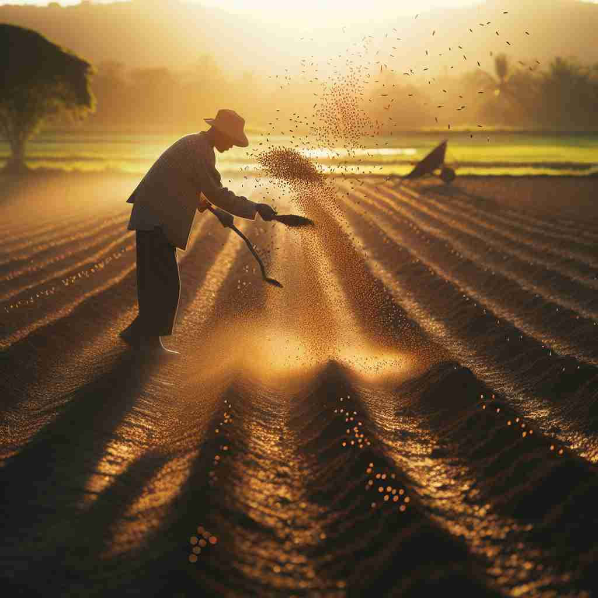

💬 The farmer will sow seeds in the field at sunset.

💬 The farmer will sow the seeds in the fertile soil.
🔈 [səʊ]
🗝️ v. to plant seeds in the ground
🖼️ 在一个宁静的乡村早晨，农夫拿起一把种子，轻轻地在刚刚翻耕好的土地上走动。他小心地将种子撒入土壤中，确保每粒种子都有足够的空间生长。这个场景展现了'sow'表示播种的过程。
🔍 想象你手中撒下种子的动作，这是'sow'的核心含义。从这个动作，我们可以联想到散布其他物品，或者比喻性地'播下'某种影响。记住这个播种的画面，可以帮助你联系'sow'的各种用法。而作为名词时表示母猪，虽然看似不相关，但可以联想母猪的生育能力，与播种、繁衍有异曲同工之妙。
💬 The farmer will sow seeds in the field at sunset.
💬 The farmer will sow the seeds in the fertile soil.
🌳 该单词是一个基础动词，没有特定的词根或词缀，表示 '播种'。它来源于古英语 'sawan'，在农业上下文中常用。
💡 可以联想 'sow a seed'，两个词都是以 's' 开头，容易记住它们在农业中的关系。
🗝️ v. to spread or scatter
🖼️ 想象一个春节庆祝活动，家家户户都在门前撒上大米粒，以求好运。米粒在风中轻轻飘散，覆盖了地面，形成了一片白色的花毯，生动描绘了'sow'之意为散播或撒播。
💬 The wind sows leaves across the lawn.
❓ 从播种动作延伸到广泛散布
🗝️ v. to cause or begin something
🖼️ 在一个热烈的辩论会上，主讲人引入了一个颇具争议的话题。此时，整个会场立刻被激烈的讨论声充满，像燃起的火焰一般四处蔓延，体现了'sow'作为引发或开始某事的作用。
💬 Their actions sowed the seeds of discord.
❓ 比喻将种子播下，引发后续发展
🗝️ n. an adult female pig
🖼️ 在一片宽阔的农场中，一只肥胖的母猪悠闲地在泥地里打滚。她的耳朵不时地抖动，显得十分愉悦，周围跟随着几只小猪，表现了'sow'作为成年母猪的含义。
💬 The sow gave birth to a litter of piglets.
❓ 源自古英语'sugu'，可能与'生育'概念相关